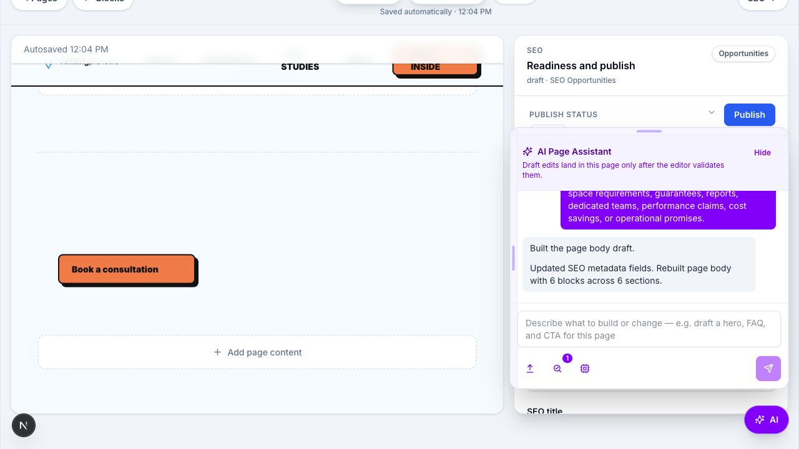

Overall Confidence
Current state after prompt, gate, tests, and browser evidence.
This is materially higher than before because thin responses are now caught by deterministic logic, not only by prompt wording.
Final evidence report for the June 9, 2026 pass focused on making AI page-builder output less thin, more useful for SEO, and safer across all editor block families.
Current state after prompt, gate, tests, and browser evidence.
This is materially higher than before because thin responses are now caught by deterministic logic, not only by prompt wording.
Desktop and mobile block render parity.
Existing browser audit passed for every block variant, including image, video, proof, and lead form.
AI chat and provider request suites.
All focused tests passed after adding shared SEO-gate and topic diversity coverage.
| Area | Confidence | Why | Remaining Gap |
|---|---|---|---|
| SEO content depth | 92% | Prompt now demands 6-8 visible blocks, substantial copy, 4-6 cards, 5-7 FAQs, people-first content, readable headings, and no public SEO mechanics. | Human editorial review is still required before publishing real pages. |
| Thin-content prevention | 91% | Shared quality gate evaluates block count, cards, FAQs, word count, exact-keyword count, unsupported blocks, empty visible blocks, and risky language. | Future CI should fail the build if this gate is removed or bypassed. |
| Block coverage | 95% | Browser audit passed 30 variants. The AI sequence also exercised hero, rich text, image, video, CTA, FAQ, card grid, proof, and lead form. | Full-page replacement intentionally accepts copy-heavy block types; image/video use dedicated media tools. |
| Provider parity | 72% | Mocked OpenAI and Cerebras request tests pass with the same expanded token budget and tool schema coverage. | Live OpenAI parity is blocked until account quota/credits are restored. |
| Repeatable browser regression | 86% | Existing Playwright-style block-preview audit ran against localhost and passed across desktop and mobile. | The repo still lacks a committed Playwright test runner package for CI-grade AI chat flows. |
5000 to
8000 tokens for both OpenAI Responses API and
Cerebras chat completions.
assessReplacementSeoDraftQuality as a
shared server-side quality gate with structured reasons and
metrics.
| Minimum blocks | 5 visible replacement blocks |
|---|---|
| Cards | At least 4 cards in the replacement draft |
| FAQs | At least 5 FAQ items |
| Copy depth | At least 450 visible words |
| Keyword control | Exact target keyword must appear no more than 5 times |
| Risk language | Rejects phrases such as target keyword, exact phrase, free consultation, cuts costs, guarantee, full compliance, and unsupported reports or service claims. |
The original request was for 50 sequential in-browser tests while tweaking the system prompt each time until the generated content became strong. The live sequence completed 50 requested runs, plus a 51st replacement run after a transient Cerebras failure on run 50.
| Evidence | Result |
|---|---|
| Final successful AI builder run | 6 sections, 5 cards, 5 FAQs, 625 visible words, exact keyword count 5, no generic/risky phrase matches. |
| Observed block types in AI run sequence | Hero, rich text, image, video, CTA, FAQ, card grid, proof, and lead form all exercised and checked. |
| Image regression | Earlier image runs exposed exact-keyword stuffing. The later image run passed after media copy cleanup. |
| Video regression | A video URL applied as an image previously crashed the editor. Validation now rejects that mismatch and the later video run passed. |
| Final screenshot | final-editor.png shows the editor settled without the rendering error state. |
| Block-preview browser audit | 30/30 variants passed on desktop and mobile. |

| Block family | Browser parity status | AI-builder status |
|---|---|---|
| Hero | PASS | Covered |
| Rich text | PASS | Covered |
| Image | PASS | Covered through media validation and image run |
| Video | PASS | Covered through media validation and video run |
| CTA | PASS | Covered |
| FAQ | PASS | Covered |
| Card grid | PASS | Covered |
| Proof | PASS | Covered |
| Lead form | PASS | Covered |
The fallback regression now checks substantive output across these page topics:
Each fixture must produce 5 cards, 5 FAQs, at least 450 words, topic terms in body copy, no banned risky phrases, and no exact-keyword overuse.
The implemented gate follows those principles by prioritizing substantial, useful copy; concise metadata; and avoiding keyword-stuffed or manipulative language.
| Command | Status | Evidence |
|---|---|---|
npm test -- src/lib/page-builder/ai-chat.test.ts src/lib/services/openai-page-builder-chat.test.ts |
PASS | 2 files passed, 34 tests passed. |
npm test -- src/app/api/page-builder/ai/chat/route.test.ts src/components/admin/seo-page-editor/editor-ai-tools.test.ts |
PASS | 2 adjacent integration files passed, 6 tests passed. |
npm run typecheck |
PASS | tsc --noEmit completed without errors. |
npm run lint |
PASS | eslint completed without errors. |
scripts/block-preview-parity-audit.mjs |
PASS | 30 pass, 0 fail, 0 needs-human, 0 skip. |
git diff --check -- intended source files |
PASS | No whitespace errors in intended source diffs before report creation. |
The page builder is now substantially safer against thin SEO output. The biggest quality lift is the shared replacement draft assessment: it makes weak output measurable and automatically replaceable with a stronger deterministic draft.
Current release confidence is high for local prompt/gate behavior and block rendering. It should not be called provider-complete until live OpenAI quota is restored and parity is rerun.
{kind=link}